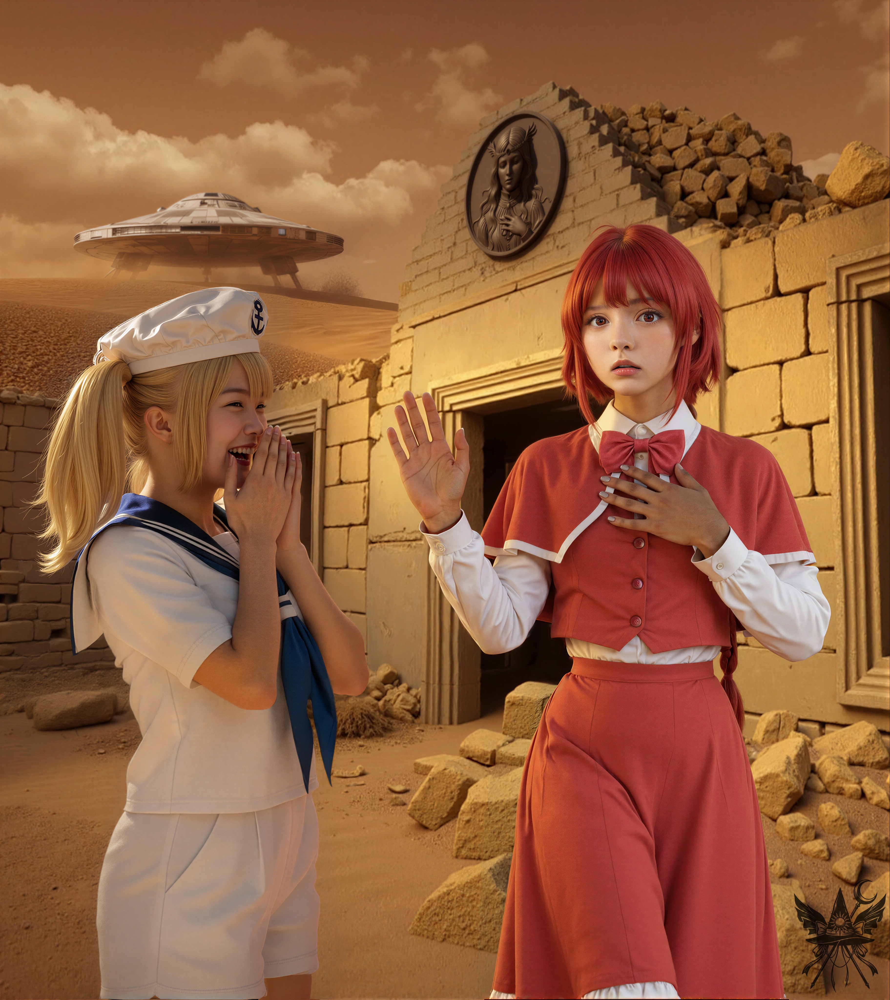
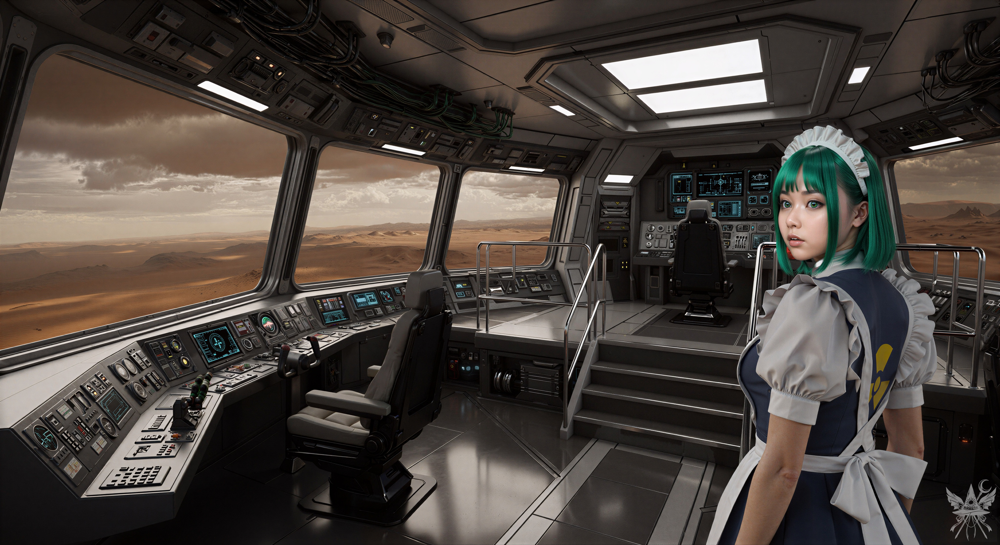
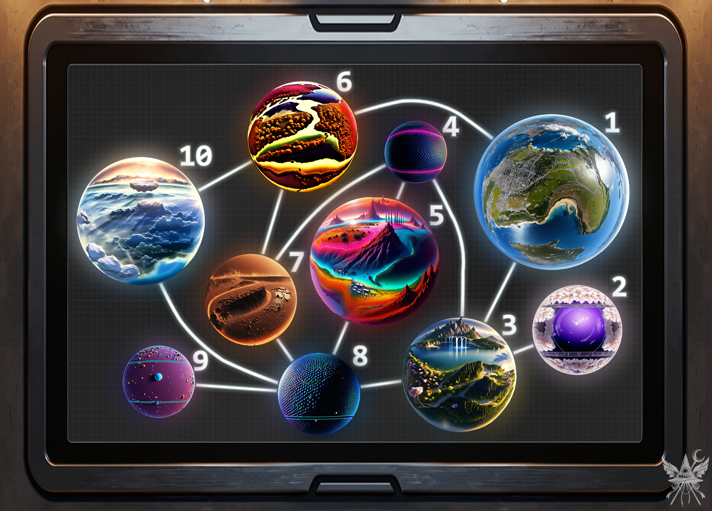

二人は青銅の浮き彫りに歩み寄り、その表面をじっと見つめていた。獲物を狙うハンターのように鋭い視線だ。夢美は銀色の包みを手に、今にも遺跡の中に投げ込もうとしていた。
（仕方ない…！）
隠れていた石壁の隙間から飛び出すと、片手を高く掲げて声を張り上げた。
「ちょっと待ってください！ 爆破なんてやめて！」
「おおっ！ ちゆり見て、私たち、現地の人をうっかり殺しかけちゃったわ。大変！」
赤いマントの女――夢美は、胸元に手を当て、もう一方の手を大げさに振り上げた。
「私たちは平和の使者です！ あなたがたに危害は加えません！」
その芝居がかったぎこちない振る舞いに、張り詰めていた空気が一気に脱力感へと変わる。威厳を保とうとして頬を強張らせる彼女の横で、助手の少女が腹を抱え、肩を震わせて吹き出していた。乾いた砂の匂いが立ち込める死の世界に、場違いなほど明るい笑い声と、気恥ずかしさからくる人間臭い焦りが入り混じる。

（まるで喜劇ね。でも、隙だらけに見えても油断は禁物だわ）
「初めまして。私はこの辺りの出身ではありません。それに、あなたたちのことも少しだけ存じております。研究者の方……ですよね？」
「夢美様！ この人、私たちのこと知ってるってさ！」
ちゆりは手元の物騒な銃器を握り直し、目を輝かせた。
「じゃあ、さっさと遺跡をドカンとやって、お宝ゲットだ！」
「それはお勧めしませんね。そんな乱暴な手段では、本当にガラクタとして質屋行きになるだけですよ。お二人に、もっと有益な提案があるのですが……いかがですか？」
「本当なの？」
夢美は興味深そうに片眉を上げた。
「ごめんなさいね、命の危険に晒してしまって。まずは自己紹介させてちょうだい。私、岡崎夢美。教授……」
「元教授だ！」
ちゆりが得意げに口を挟んだ。
「……そうね、元教授だわ。学会の准会員だったこともあるし、比較物理学部長も務めていたのよ……」
「過去形ばっかじゃん！！！」
「ちゆりってば、誰が口挟めって言ったのよ！？ ……ええそうよ、元よ、元。今は独立して研究してるの。資金だって自分で出してるんだから。で、この落ち着きのない子が私の助手の……」
「操縦士の北白河ちゆりだ。ちゆりって呼んでもいいし、ちゆちゃんでもいいよ！ もうすぐ博士号を取る予定なんだ」
「どうせあんたの論文なんか通りっこないし、博士になんか一生なれないわよ！ 死ぬまで甲板磨きして、貧乏のまま死ぬんだわ！」
夢美はまくし立てた。
「……とにかく、よろしくね」
二人は軽くお辞儀をした。
「メデアと申します。私も、ある意味では研究者なんですよ。ところで、朝倉理香子さんという方をご存知ですか？」
「理香子ちゃん？ もちろん知ってるわよ！」
夢美は満面の笑みを浮かべた。
「ほら、こんな埃っぽいとこに突っ立ってないで、私たちの宇宙船に乗っていきなさいよ！ 理香子の話も聞かせてちょうだい」
どうしても置いて行きたくない自転車を押しながら、遺跡の外へと歩み出る。
「うわ、キラキラしてて超カッケー！ それって魔法の自転車！？」
「ええと、実は私もよくわかっていないんですよ」
「じゃあ、スキャンさせてくれよ！」
ちゆりは興奮を抑えきれない様子で端末を構えた。
「構いませんよ。手ぶらで乗せてもらうわけにもいきませんしね」
夢美が巨大な円盤型の船体へと手招きする。埃を被ってはいるものの、金属的なシルバーグレーの外殻は周囲の荒野を冷たく反射していた。機体の真下へ足を踏み入れると、ちゆりが手元のボタンを操作する。次の瞬間、重力が消失し、身体がフワリと浮き上がって無機質なハッチの奥へと吸い込まれていった。
船底の丸い穴を抜け、冷たい金属の床に両足で降り立つ。外の息苦しい熱気は完全に遮断され、低く唸る電子機器のハム音と空調の乾いた冷気だけが支配する密室。理香子の研究室をさらに洗練させたような、冷酷なまでに整然とした空間だった。
（まるで別の宇宙に迷い込んだみたいね）

分厚いフロントウィンドウの向こうには、先程まで身を置いていた赤茶けた地獄の荒野が広がっている。その非現実的な景色を背に、視界の端に静かに佇む影があった。
かつて地下施設で見た、あのメイドだった。緑色の髪も、背中に描かれた黄色と黒の放射能標識も、あの時のままだ。
「自転車、自転車っと」
夢美は鼻歌を歌いながら指示を出した。
「ちゆり、スキャナーにかけてちょうだい」
「夢美様、お客さんだよ！ まずは何か食べ物を用意しよっか」
「じゃあ、あんたが食べさせればいいでしょ。でも先にスキャナーに入れて」
「この教授ったら、まったく……」
ちゆりは呆れたようにため息をつくと、
「ちょっと失礼」
と小声で言い、壁際の小さな区画へと自転車を引きずっていった。夢美は向かい側のコンソールに近づき、無数のスイッチやダイヤルを叩く。
「すごい！ 自転車が、ない！ この自転車、スキャンだと存在しないことになってんのよ！」
夢美は目を丸くして叫んだ。
「『存在しない』ってどういうことだ？」
ちゆりは首を傾げながら、バルブを回した。
「だって、さっきまで手で押してただろ？」
「でもモニターには何も映っていないの。ほら、見てみなさい」
言われた通りに青く発光するディスプレイを覗き込む。複雑なデータウィンドウが重なっているだけで、確かに自転車の反応を示すものは何一つ表示されていなかった。
ちゆりが再びバルブを回すと、シャッターが開き、自転車が勢いよく飛び出してきた。
「すごーい！ メデアさん、一体どこで手に入れたんだ？」
「まあ、この辺りで偶然。まだ、それほど乗ってはいないんですけどね」
（血痕の持ち主の物だなんて、馬鹿正直に教える必要はないわね）
「放射能も調べてちょうだい」
ちゆりは小型の端末を取り出し、フレームに沿って動かした。
「カウンターはゼロ。つまり、放射能反応はまったくなしだ。電磁波も、重力波も、その他もろもろ全部ゼロ！ まったく何もないみたいだ」
「わかったわ。それは後でゆっくり調べるとして……。ちゆり、ご飯の用意は？」
狭い通路を抜けると、広々とした船長室に出た。壁一面に無骨な計器が埋め込まれた空間で、先程のメイドロボットが静かに歩み寄ってくる。
「る～こと、晩ご飯の時間よ。今夜はジューシーなステーキと、デザートに甘いプリンがいいわ！」
「弁解のしようもございません、ご主人様。食材は、牛肉の缶詰と加糖練乳しか残っておりません」
る～ことは、本当に申し訳なさそうに答えた。
「もう！ ちゆり、またあのまずいのよ！ あんた、いつになったら宇宙生物の狩りを覚えるのよ！？」
「博士号を取ったら、すぐにマスターしてみせるって！」
ちゆりはケラケラと笑う。
る～ことがプラスチック製の皿を三枚載せた盆を運び、手渡してくれた。箸が添えられた皿の中身は、牛肉入りのインスタント粥。ろくな食事をとっていなかった身としては、これでも十分すぎるご馳走だった。
「ねぇ、メデアさん。この世界には何か生き物っているのかしら？」
食事を口に運びながら、夢美が尋ねる。
「いえ、おそらく何もいないでしょう。石と埃だらけの不毛な地ですから」
「じゃあ、あの廃墟には何があるのよ？ ブロンズ製のガラクタよりいいものがあるって言ったけれど……まさか、あの『存在しない』自転車のことじゃないわよね？」
「ええ、自転車は関係ありません。あの青銅の浮き彫り、王冠から宝石が欠け落ちていたでしょう。それを元に戻せば、想像を絶する魔法が発動するはずです。この世界全体が変わってしまうほどのね」
「ええっ！？ 冗談でしょ？ どうしてそんなこと知ってるのよ？」
「言ったでしょう？ 私も研究者だと。確たる証拠をお見せすることはできませんが、私の言葉を信じていただければ、必ずお互いの利益になりますよ」
「ねぇ、ちゆり！ 私たち、またとんでもない魔法の謎に巻き込まれているみたいだわ！ それで、その宝石はどこにあるの？」
「魔界という世界にあるはずです。お聞きになったことは？」
二人は顔を見合わせた。
「魔界？ 私たちは正体不明の波動源を追って、可能性空間を跳躍してきただけなのよ。世界のローカルな呼び名なんて知らないわ。幻想郷の存在だって、現地の人間に教えられてようやく知ったくらいなんだから。理香子を知っているなら、私たちの正体も推測がついているんでしょう？」
「ええ、だからこそ、すぐに協力関係を結べると判断したんです。魔界を見つけ出す手段はありますか？」
「あるよ！」
食事を終え、る～ことが淹れた練乳入りの紅茶をすすっていたちゆりが身を乗り出した。
「サイキックエネルギーの流れと、世界同士のリンクを辿れば一発だ。メデアさん、魔界について知ってること全部教えてよ。もう行ったことはあるのか？」
「残念ながら、未踏破です。ですが、幻想郷と安定した通路で繋がっている悪魔の世界だと聞いています。高度な魔法も存在するらしいので、お二人の研究対象としても申し分ないはずですよ」
「じゃあ、これを見てくれ」
ちゆりがコンソールのスイッチを弾く。暗いグリッド模様のモニターが浮かび上がった。

「この光るラインが、世界同士を繋ぐワームホールを示しているんだ。わかるか？」
（なんて大掛かりな仕掛け……）
モニターに映し出されたのは、多元宇宙を冷酷なまでに簡略化した星図だった。自分たちが足掻いてきた地獄の荒野すら、単なる一つの球体としてカタログ化されている。科学という分析の刃が、神秘のベールを剥ぎ取っていく光景。
「ふむ……。なるほど。それで、私たちは現在どの位置にいるのですか？」
「ここだ！」
ちゆりが赤茶色で、「7」との番号がついている球体を指し示すと、夢美が横から口を挟んだ。
「というわけだから、魔界に案内してほしいなら、まずこのマップの中から該当する世界を特定してちょうだい。しらみ潰しに全球体を調べるような非効率なマネはごめんだからね」
（複雑なネットワーク構造……。でも、幻想郷とのリンクと環境情報から絞り込めば、特定は可能ね）